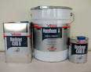
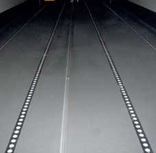
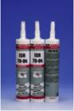
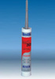
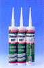
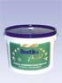

Автотранспортная серия
Особым направлением производства компании SIMSON является Специальная Промышленная Серия (ISR). Это производство высокотехнологичных и высококачественных продуктов, специально разработанных для промышленного применения.

МаротанСамовыравнивающееся эластичное финишное износостойкое двухкомпонентное полиуретановое покрытие для пола без растворителей. Предназначено для создания герметичного полового покрытия в автоприцепах, грузовиках, рефрижераторах, гаражах, складских помещениях, вентиляционных помещениях, санитарных комнатах и т.п.

СВОЙСТВА
- Отсутствие растворителей
- Хорошая водостойкость
- Износостойкий
- Легкость и быстрота нанесения
- Самовыравнивающийся
- Обладает антикоррозионными свойствами
- Легко ремонтируемый
- Имеет сертификат TNO для контакта с пищевыми продуктами
 ISR 70-02
ISR 70-02
Продукт ISR 70-02 производства компании Simson обладает как свойством адгезии (прилипания), так и свойством герметизации. Клей ISR 70-02 может быть также использован в случае применения комбинированных способов крепления. В этом случае, например, сначала используется клей ISR 70-02, затем глухие заклёпки. Герметизация кромки может производиться этим же продуктом. ISR 70-02 – это герметик и клей на основе технологии МS-полимеров, не содержащий растворителя.
ВИДЫ ИСПОЛЬЗОВАНИЯ
- Герметик для использования в вагоностроении, при строительстве полукапитальных строений.
- Подавление вибрации между металлами, деревом и комбинированными соединениями дерева и металла.
- Герметизация сварных швов листового железа.
- Эластичное конструктивное крепление металлов к дереву, металлу или стеклу.
- Герметизация многослойных панелей и крепление металлических полос к многослойным панелям.·
- Герметизация морозильных камер, рефрижераторов, и т.д.
ОСОБЕННОСТИ
- Не содержит изоцианатов и растворителей.
- Сохраняет эластичность в диапазоне температур от - 40°C до + 100°С.
- Температура использования в диапазоне от +5°С до + 35°С.
- Нейтральный, без запаха, быстро отвердевающий.
- Очень хорошая совместимость с краской при использовании большинства промышленных красящих и лакирующих систем, как на основе алкидных полимеров. Так и на основе дисперсионных материалов.
- Окрашивается после формирования плёнки по влажной поверхности. Это не повлияет на скорость отвердения клея.
- Очень хорошая устойчивость к ультрафиолетовому излучению и очень хорошие свойства сопротивляемости старению.
Цвета: (стандартные): Белый / серый / черный
Упаковка: 290 мл картридж, 600мл. возможны поставки в «бочонках».
 ISR 70-03
ISR 70-03
ISR 70-03 производства компании SIMSON – это однокомпонентный, эластичный клей на основе МС – полимера, специально разработанный промышленных отделочных работ с высокими требованиями к эластичности конструктивных соединений и швов.
ВИДЫ ИСПОЛЬЗОВАНИЯ
- Клеевые соединения и швы металлических конструкций и механизмов вагонного парка.
- Соединения металлов в автомобильной промышленности, такие как солнцезащитные потолки, крылья, и т. д.
- Герметизация сварных швов.
- Герметизация соединений от швов шириной 3 мм до стыков шириной 25мм.
- Крепление длинных металлических полос на нескольких поверхностях, где не разрешается сварка из-за деформации металла.
- Герметизация бункеров для сухих удобрений и химических удобрений.
- Крепление/ герметизация зерновых элеваторов и бункеров для сухого фуража.
- Крепление металлов и синтетических материалов. Обращайтесь за консультацией к специалистам компании Simson.
- Крепление воздушных фильтров в металлических кожухах.
- Герметизация и укрепление соединений для горловин и люков.
- Крепление металлических подкрепляющих полос на металле.
ОСОБЕННОСТИ
- Не содержит ни растворителей, ни изоционатов.
- Сохраняет эластичность в диапазоне температур от - 40°C до + 100°С.
- Допустимо кратковременное (30 мин.) повышение температуры до + 180°С.
- Высокая механическая прочность и вязко-эластичный характер. Это обеспечивает высокую степень жёсткости конструкции при использовании в вагоностроении для крепления листов тонколистовой стали.
- Компенсация натяжения в металлах при колебаниях температуры.
- Снижение вибрации и толчков.
- Очень хорошие свойства прилипания, устойчив к ультрафиолетовому излучению.
- Без запаха, как во время вулканизации, так и после неё.
- Может быть отшлифован после завершения вулканизации.
- Совместим с краской при использовании многих промышленных красящих и лакирующих систем.
- Simson ISR 70-03 не оказывает влияния на вулканизацию лакирующих покрытий и наоборот.
- Нанесение краски допустимо через 30 минут на влажную поверхность.
Цвета : Белый / серый / черный
Упаковка: 290 мл картридж, 600мл. возможны поставки в «бочонках».

ISR 70-04ISR 70-04–однокомпонентный, эластичный стекольный клей на основе МS – полимера, с высокой устойчивостью к УФ-излучению.
ISR 70-04 соответствует Федеральному Стандарту Безопасности для моторизованных средств 212 (Federal Motor Vehicle Safety Standard 212). Стандарт регламентирует приклейку лобовых стёкол путём двойного ‘’полного проклеивания’’ стеклопакета. Под этим понимается эффект двух ‘’подушек безопасности’’. Спустя один час после применения ISR 70-04 было проведено испытание на столкновение в ходе промоделированной аварийной ситуации.
ОСОБЕННОСТИ
- ISR 70-04 не содержит изоцианаты, поливинилхлорид, растворители.
- Превосходная устойчивость к УФ-излучению и стойкость к изнашиванию.
- Для нанесения ISR 70-04 на большинство поверхностей не требуется применение грунтовки.
- ISR 70-04 сохраняет эластичность в диапазоне температур от -40° С до + 100° С.
- ISR 70-04 нейтральный, без запаха, быстрозатвердевающий.
- Незначительная степень усадки.
- Низкая электропроводимость.
Цвет: черный
Упаковка: 290 мл картридж, 600мл
 ISR 70-05
ISR 70-05
ISR 70-05 производства компании SIMSON – это однокомпонентный, отвердевающий во влажном состоянии и нейтральный герметик на основе МС - полимера. Герметик ISR 70-05 специально разработан для случаев применения, требующих, как высокую прочность на разрыв, так и твёрдость по Шору в сочетании с эластичным креплением.
ВИДЫ ИСПОЛЬЗОВАНИЯ
- Эластичные соединения между деревом и металлом при использовании в случае хранения материалов в условиях низких температур.
- Склеивание дерева и металла в вагоностроении.
- Присоединение солнцезащитных потолков грузовых и легковых автомобилей.
- Покрытие, сокращающее вибрацию между между металлами, деревом, различными синтетиками и комбинациями зтих материаллов.
- Соединение кухонных столешниц из синтетического материала или нержавеющей стали с деревом, металлом или синтетическим материалом в производстве сборки кухонной мебели.
- Соединение металлического и деревянного несущего основания грузовиков и трейлеров для транспортировки крупного рогатого скота.
- Соединение бетона с опорами / прокладками и плинтусами компьюторных настилов.
- Герметизация широких швов деревянных / металлических соединений.
Цвета (стандартные): Белый / серый / черный
Упаковка: 290 мл картридж, 600мл. возможны поставки в «бочонках».
 ISR 70-08
ISR 70-08
ISR 70-08 – это высококачественный продукт на основе МС – полимера, специально разработанный для крепления лобовых стёкол. ISR 70-08 обеспечивает быстрый и эффективный путь крепления многих различных материалов для Оригинального Производителя Оборудования (OEM), вагоностроения, подвижных средств, и т д., особенно там, где сразу же после установки в процессе производства объекты приходится перемещать. ISR 70-08 соответствует стандарту ‘’Федеральному Стандарту Безопасности для моторизованных средств 212’’ (Federal Motor Vehicle Safety Standard 212). Стандарт регламентирует приклейку лобовых стёкол путём двойного ‘’полного проклеивания’’ стеклопакета. Под этим понимается эффект двух ‘’подушек безопасности’’. Спустя один час после применения ISR 70-08 было проведено испытание на столкновение в ходе промоделированной аварийной ситуации.
ISR 70-08 также одобрен европейской компанией по сертификации TUV (отчёт № 372-006-97-FFBFS), где отремонтированное лобовое стекло было испытано через час после склейки, согласно процедуры ‘’Федерального Стандарта Безопасности для моторизованных средств 212’’ FMVSS 208/212.
ОСОБЕННОСТИ
- ISR 70-08 соединяет в себе преимущества горячего расплава, клейкой ленты и реактивной системы. Сразу после установки продукт имеет высокую прочность в невулканизированном состоянии (высокую внутреннюю прочность), которая в результате приводит к образованию очень слаболетучей мастики с чрезвычайно хорошим сопротивлением усадки. Реакция начинается под воздействием влаги воздуха и в результате приводит к необратимому процессу образования вулканизированной клейкой массы. Высокая прочность в невулканизированном состоянии, соединённая с высокой клейкостью, делают этот продукт очень полезным для использования в тех случаях, когда узлы приходится транспортировать сразу же после установки.
- ISR 70-08 хорошо прилипает без грунтовки стекла, не требуется нанесения грунтовки устойчивой к ультрафиолетовому излучению в случаях, когда стекло защищено от ультрафиолетового излучения керамическим покрытием.
- ISR 70-08 без грунтовки хорошо прилипает к окрашенной металлической поверхности.
- ISR 70-08 сохраняет эластичность в диапазоне температур от -40° С до + 120° С.
- ISR 70-08 не содержит ни изоцианатов, ни поливинилхлорида, ни растворителей и не испускает запаха.
Цвет: черный
Упаковка: 290 мл картридж, 600мл

Бостик 2639Bostik 2639
1-компонентный герметик на основе полиуретана.
Для герметизации в автомобилестроении, кораблестроении, металлоконструкциях и т.д. Хорошо подходит для наклеивания фасадной плитки. Наносится на алюминий, высококачественную сталь, керамику, дерево, бетон, плитку.
Быстроотвердевающий под воздействием влажности воздуха. Гасит колебания. Не вызывает коррозию. Устойчив к атмосферным воздействиям, к химическим веществам. Эластичный.
Цвет: белый, серый, черный
Упаковка: туба 310 мл
 Высокотемпературный Силикон
Высокотемпературный Силикон
Bostik Hochtemperatur-Silicon (Nibosil 3057 HT)
Силиконовый герметик для использования при повышенных температурах.
Для соединительных и деформационных швов, внутри и снаружи зданий. Предназначен для соединения швов испытывающих воздействие высоких температур: в системах отопления, вентиляции и т.д. Используется в приборостроении и автомобильной промышленности.
Ацетатная система. Пригоден для использования при температурах до 200 градусов Цельсия. Нормально воспламеняемый по DIN 4102, часть 1.
Цвет: красный
Упаковка: туба 300 мл
Бостик 1777
Bostik 1777
Клей для тормозных колодок. Термореактивный 1-компонентный специальный клей с высокой температурной устойчивостью и устойчивостью к сдвигу. Для склеивания накладок с тормозными колодками и металла с металлом. Жароустойчивый, может, наносится кистью
Снят с производства.
Бостик 1475
Bostik 1475
Клей на основе нитрилкаучука. Для приклеивания термо - и дуропластов, а также дерева и металла. Хорошая устойчивость к химическим воздействиям. Возможно также использование с Боскодар AF 8650 в качестве второго компонента.
Упаковка: банка 910 г, канистра 8,9кг

Клей Симсон 007Simson 007
Монтажный клей и герметик на основе MS-полимера.
Наклеивание большинства материалов на дерево, камень, бетон, металл и большинство синтетических материалов при наружных и при внутренних работах. Уплотнение стыков, соединительных и подвижных швов.
Эластичен в течение длительного времени, обладает высокой адгезией.
Цвет: белый, серый, черный
Упаковка: туба 290 мл

Бостик БестBostiks Best
Специальный клей для напольных покрытий
- не содержит растворителей
- особенно хорошо намазывается
- обладает высоким начальным сцеплением
- требует мало времени для образования пленки
- обладает длительной жизнеспособностью
Дисперсионный клей для покрытий из ПВХ в виде полотнищ или плитки, для покрытий из хлорвинила, покрытий на основе полиолефина, резиновых покрытий толщиной до 3,5 мм с гладкой, шлифованной обратной стороной и гладкой рабочей поверхностью, а также - линолеума и ковровых покрытий с различной структурой обратной стороны. Пригоден для приклеивания ПВХ - покрытий на ПВХ - покрытия. Для ковровых покрытий с высоким собственным напряжением, например, жёстких покрытий из иглопробивного нетканого материала, рекомендуется использовать BOSTIK POWER-TEX. Из-за разного качества покрытий из полиолефина о пригодности к применению следует проконсультироваться у производителя покрытия. Подходит для наклеивания ПВХ - покрытий на ПВХ - покрытия . GISCODE D 1
Зубчатый шпатель - Расход:
A2 - прим.280 г/ м.кв.
B1 - прим.300 г/ м.кв.
зависит от основы и обратной стороны приклеиваемого покрытия
Упаковка: банка 850 гр., ведро 3,5 кг , 7 кг , 13 кг , 21 кг, бочка 150 кг